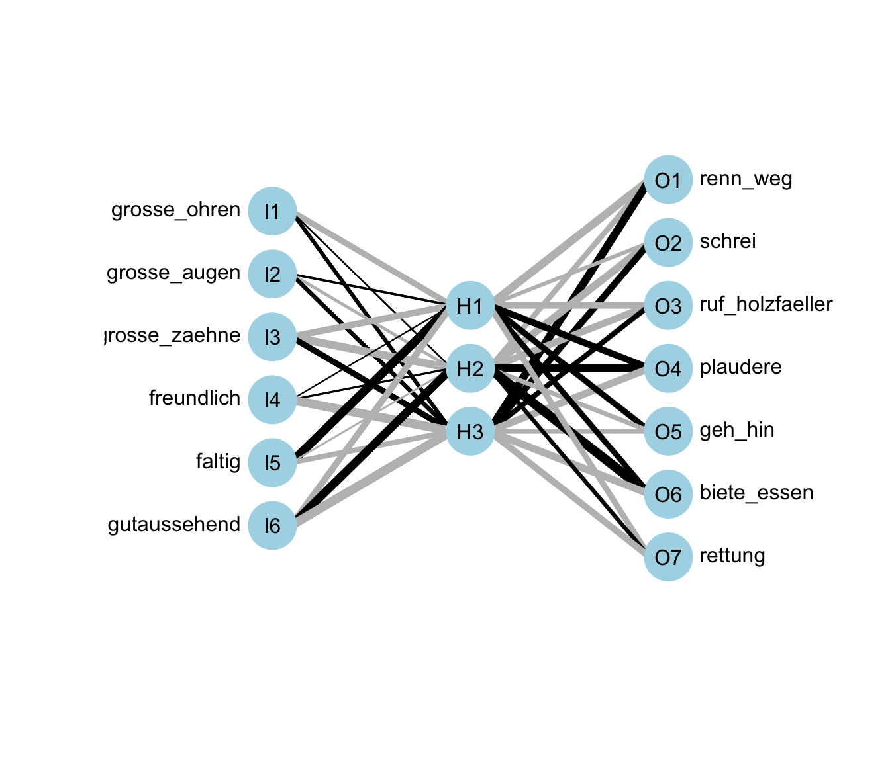

55 Neural networks
Version vom December 05, 2022 um 12:18:09

So, das war ein ganz schönes Brett, TensorFlow oder Keras auf dem Rechner zu installieren. Es gibt zwar einen Quick start um Tensorflow zu installieren aber dann hatte ich das schöne Problem der GPU auf dem macOS mit M1 Chip. Die Lösung für die Local GPU hat mich auf dem macOS einen Tag Nerven gekostet. Das mag dann auf einem Windows Rechner anders sein bzw. andere Probleme verursachen. Schlussendlich ist die Nutzung von neural networks auf keinen Laptops vieleicht auch nicht so die beste Idee. Wir würden die Algorithmen eher auf Hochleistungsrechner durchführen und dann vermutich eine Linuxdistribution verwenden. Dennoch werde ich hier einmal Tensorflow in R vorstellen. Die Pakete für die Integration von dem eigenständigen Algorithmus Tensorflow gibt es und wenn es dann mal installiert ist, funktioniert auch alles super. Da Tensorflow in Phyton programmiert ist, muss auch Phyton auf dem Rechner installiert sein. Du siehst also, es ist einiges einzurichten, damit wir Deep learning betreiben können. Hier möchte ich dann auch gerne auf Mueller und Massaron (2019) verweisen, der zu dem Thema Deep learning einen guten Einstieg liefert. Denn wir machen hier eigentlich kein Deep learning, denn unsere neuronalen Netzwerke werden nicht viele Schichten haben, dass würde hier mein kleiner Rechner auch gar nicht schaffen.
Wir immer basirt dieser Text zum Teilen auch auf guten Tutorien im Netz. Zum einen ist es das Tutorium Understanding the Magic of Neural Networks und das Tutorium A Beginner’s Guide to Neural Networks and Deep Learning. Beide Tutorien sind in Englsich und Teile beider Tutorien hat auch diesen Text hier insperiert.
55.1 Genutzte R Pakete
Wir wollen folgende R Pakete in diesem Kapitel nutzen.
pacman::p_load(tidyverse, tidymodels, magrittr,
janitor, keras, tensorflow, see,
lime, neuralnet, NeuralNetTools,
conflicted)
conflict_prefer("select", "dplyr")
conflict_prefer("filter", "dplyr")
conflict_prefer("mutate", "dplyr")
conflict_prefer("extract", "magrittr")
##
set.seed(2025429)Am Ende des Kapitels findest du nochmal den gesamten R Code in einem Rutsch zum selber durchführen oder aber kopieren.
55.2 Neuronale Netzwerke theoretisch
| Neural network | Logistic regression (eng.) | Logistische Regression (deu.) |
|---|---|---|
| Activation function | Link function | Link Funktion |
| Weights | Coefficients | Koeffizienten |
| Bias | Intercept | Intercept |
| Variance | Residuals | Fehler / Residuen |
| Learning | Fitting | Modellieren |
little_red_tbl <- tibble(grosse_ohren = c(1, 0, 1),
grosse_augen = c(1, 1, 0),
grosse_zaehne = c(1, 0, 0) ,
freundlich = c(0, 1, 1),
faltig = c(0, 1, 0),
gutaussehend = c(0, 0, 1),
renn_weg = c(1, 0, 0),
schrei = c(1, 0, 0),
ruf_holzfaeller = c(1, 0, 0),
plaudere = c(0, 1, 1),
geh_hin = c(0, 1, 0),
biete_essen = c(0, 1, 1),
rettung = c(0, 0, 1))Tabelle 55.1— Die beiden Datensätze für das neuronale Netzwerk. Wie lässt sich der Input sinnvoll mit dem Output verbinden? Wir geben dafür drei Hidden Layers vor, die dann die Charaktere Wolf, Goßmutter und den Holzfäller repräsentieren..
| grosse_ohren | 1 | 0 | 1 |
| grosse_augen | 1 | 1 | 0 |
| grosse_zaehne | 1 | 0 | 0 |
| freundlich | 0 | 1 | 1 |
| faltig | 0 | 1 | 0 |
| gutaussehend | 0 | 0 | 1 |
| renn_weg | 1 | 0 | 0 |
| schrei | 1 | 0 | 0 |
| ruf_holzfaeller | 1 | 0 | 0 |
| plaudere | 0 | 1 | 1 |
| geh_hin | 0 | 1 | 0 |
| biete_essen | 0 | 1 | 1 |
| rettung | 0 | 0 | 1 |
neuralnetwork <- neuralnet(renn_weg + schrei + ruf_holzfaeller + plaudere +
geh_hin + biete_essen + rettung ~
grosse_ohren + grosse_augen + grosse_zaehne +
freundlich + faltig + gutaussehend,
data = little_red_tbl, hidden = 3,
lifesign = "none", linear.output = FALSE)plotnet(neuralnetwork, bias = FALSE, pad_x = 0.6)
Das folgende etwas mathematische Beispiel ist von Kubat (2017), pp. 65-73, entnommen. Ich habe das Beispiel dann für R aaptiert, so dass wir hier auch R Code zum ausprobieren haben.
\[ h(x) \sim w_0 + w_1 \cdot x_1 + w_2 \cdot x_2 \]
\[ h(x)= \begin{cases} 1,& \text{wenn } h(x)\geq 0\\ 0, & \text{ansonsten} \end{cases} \]
data_tbl <- tibble(x_1 = c(0, 1, 0, 1),
x_2 = c(0, 0, 1, 1),
y = c(0, 0, 1, 1))
data_tbl %>% kable(align = "c", "pipe")| x_1 | x_2 | y |
|---|---|---|
| 0 | 0 | 0 |
| 1 | 0 | 0 |
| 0 | 1 | 1 |
| 1 | 1 | 1 |
input <- data_tbl %$%
model.matrix(~ x_1 + x_2)
weights <- c(0.1, 0.3, 0.4)
neuron <- function(input, weights) {if_else(input %*% weights > 0, 1, 0)}
neuron(weights, input[1,])[1] 1eta <- 0.2
for(i in 1:4){
weights <- weights + eta * (data_tbl$y[i] - neuron(weights, input[i,])) * input[i,]
print(weights)
}(Intercept) x_1 x_2
-0.1 0.3 0.4
(Intercept) x_1 x_2
-0.3 0.1 0.4
(Intercept) x_1 x_2
-0.3 0.1 0.4
(Intercept) x_1 x_2
-0.3 0.1 0.4 input %*% c(-0.3, 0.1, 0.4) [,1]
1 -0.3
2 -0.2
3 0.1
4 0.2neuron(input, weights = c(-0.3, 0.1, 0.4))[1] 0 0 1 155.3 Daten
In diesem Kapitel wolle wir uns aber mal auf einen echten Datensatz anschauen. Wir nutzen daher einmal den Gummibärchendatensatz. Als unser Label und daher als unser Outcome nehmen wir das Geschlecht gender. Dabei wollen wir dann die weiblichen Studierenden vorhersagen. Im Weiteren nehmen wir nur die Spalte Geschlecht sowie als Prädiktoren die Spalten most_liked, age, semester, und height.
gummi_tbl <- read_excel("data/gummibears.xlsx") %>%
mutate(gender = as_factor(gender),
most_liked = as_factor(most_liked)) %>%
select(gender, most_liked, age, semester, height) %>%
drop_na(gender)Wir dürfen keine fehlenden Werte in den Daten haben. Wir können für die Prädiktoren später die fehlenden Werte imputieren. Aber wir können keine Labels imputieren. Daher entfernen wir alle Beobachtungen, die ein NA in der Variable gender haben. Wir haben dann insgesamt \(n = 473\) Beobachtungen vorliegen. In Tabelle tbl-gummi-prepro sehen wir nochmal die Auswahl des Datensatzes in gekürzter Form.
| gender | most_liked | age | semester | height |
|---|---|---|---|---|
| m | lightred | 35 | 10 | 193 |
| w | yellow | 21 | 6 | 159 |
| w | white | 21 | 6 | 159 |
| w | white | 36 | 10 | 180 |
| m | white | 22 | 3 | 180 |
| m | white | NA | NA | NA |
| … | … | … | … | … |
| w | darkred | 26 | 1 | 170 |
| w | yellow | 19 | 1 | 164 |
| w | darkred | 22 | 1 | 165 |
| m | orange | 21 | 1 | 186 |
| m | green | 25 | 3 | 193 |
| m | lightred | 25 | 3 | 194 |
Unsere Fragestellung ist damit, können wir anhand unserer Prädiktoren männliche von weiblichen Studierenden unterscheiden und damit auch klassifizieren? Um die Klassifikation mit Entscheidungsbäumen rechnen zu können brauchen wir wie bei allen anderen Algorithmen auch einen Trainings- und Testdatensatz. Wir splitten dafür unsere Daten in einer 3 zu 4 Verhältnis in einen Traingsdatensatz sowie einen Testdatensatz auf. Der Traingsdatensatz ist dabei immer der größere Datensatz. Da wir aktuell nicht so viele Beobachtungen in dem Gummibärchendatensatz haben, möchte ich mindestens 100 Beobachtungen in den Testdaten. Deshalb kommt mir der 3:4 Split sehr entgegen.
gummi_data_split <- initial_split(gummi_tbl, prop = 3/4)Wir speichern uns jetzt den Trainings- und Testdatensatz jeweils separat ab. Die weiteren Modellschritte laufen alle auf dem Traingsdatensatz, wie nutzen dann erst ganz zum Schluss einmal den Testdatensatz um zu schauen, wie gut unsere trainiertes Modell auf den neuen Testdaten funktioniert.
gummi_train_data <- training(gummi_data_split)
gummi_test_data <- testing(gummi_data_split)Nachdem wir die Daten vorbereitet haben, müssen wir noch das Rezept mit den Vorverabreitungsschritten definieren. Wir schreiben, dass wir das Geschlecht gender als unser Label haben wollen. Daneben nehmen wir alle anderen Spalten als Prädiktoren mit in unser Modell, das machen wir dann mit dem . Symbol. Da wir noch fehlende Werte in unseren Prädiktoren haben, imputieren wir noch die numerischen Variablen mit der Mittelwertsimputation und die nominalen fehlenden Werte mit Entscheidungsbäumen. Dann müssen wir noch alle numerischen Variablen normalisieren und alle nominalen Variablen dummykodieren. Am Ende werde ich nochmal alle Variablen entfernen, sollte die Varianz in einer Variable nahe der Null sein.
gummi_rec <- recipe(gender ~ ., data = gummi_train_data) %>%
step_impute_mean(all_numeric_predictors()) %>%
step_impute_bag(all_nominal_predictors()) %>%
step_range(all_numeric_predictors(), min = 0, max = 1) %>%
step_dummy(all_nominal_predictors()) %>%
step_nzv(all_predictors())
gummi_rec %>% summary()# A tibble: 5 × 4
variable type role source
<chr> <list> <chr> <chr>
1 most_liked <chr [3]> predictor original
2 age <chr [2]> predictor original
3 semester <chr [2]> predictor original
4 height <chr [2]> predictor original
5 gender <chr [3]> outcome originalAlles in allem haben wir ein sehr kleines Modell. Wir haben ja nur ein Outcome und vier Prädiktoren. Trotzdem sollte dieser Datensatz reichen um zu erklären wie Keras oder Tensorflow funktionieren. Am Ende muss man sich aber auch ehrlich machen und sagen, dass ein Datensatz mit unter tausend Beobachtungen eigentlich keinen großen Sinn für ein neuronales Netz macht. Deshalb ist das hier eher eine Demonstration des Algorithmus.
55.4 Neuronale Netze mit Keras / Tensorflow
Deeplearning in R
Nochmal genauer anschauen:
https://colorado.rstudio.com/rsc/churn/modeling/tensorflow-w-r.nb.html
https://parsnip.tidymodels.org/reference/details_linear_reg_keras.html
https://camrongodbout.medium.com/tensorflow-in-a-nutshell-part-one-basics-3f4403709c9d
https://medium.com/analytics-vidhya/neural-networks-in-a-nutshell-bb013f40197d
keras_mod <- mlp() %>%
set_engine("keras") %>%
set_mode("classification")keras_wflow <- workflow() %>%
add_model(keras_mod) %>%
add_recipe(gummi_rec)keras_fit <- keras_wflow %>%
parsnip::fit(gummi_train_data)keras_aug <- augment(keras_fit, gummi_test_data ) keras_cm <- keras_aug %>%
conf_mat(gender, .pred_class)
keras_cm Truth
Prediction m w
m 43 41
w 12 23keras_cm %>% summary()# A tibble: 13 × 3
.metric .estimator .estimate
<chr> <chr> <dbl>
1 accuracy binary 0.555
2 kap binary 0.136
3 sens binary 0.782
4 spec binary 0.359
5 ppv binary 0.512
6 npv binary 0.657
7 mcc binary 0.154
8 j_index binary 0.141
9 bal_accuracy binary 0.571
10 detection_prevalence binary 0.706
11 precision binary 0.512
12 recall binary 0.782
13 f_meas binary 0.619keras_aug %>%
roc_curve(gender, .pred_w, event_level = "second") %>%
autoplot()
Ja, kannst du. Wenn du nur eine Kreuzvalidierung durchführen willst, findest du alles im sec-knn für den \(k\)-NN Algorithmus. Du musst dort nur den Workflow ändern und schon kannst du alles auch auf Keras / Tensorflow Algorithmus anwenden.
55.5 Tuning
Was heißt Tuning? Wie bei einem Auto können wir an verschiedenen Stellschrauben bei einem mathematischen Algorithmus schrauben. Welche Schrauben und Teile das sind, hängt dann wieder vom Algorithmus ab. Im Falle des xgboost Algorithmus können wir an folgenden Parametern drehen und jeweils schauen, was dann mit unserer Vorhersage passiert. Insgesamt hat der keras Algorithmus fünf Tuningparameter, wir wählen jetzt für uns hier drei aus. Ich nehme hier auch nur drei Parameter, da sich dann drei Parameter noch sehr gut visuell darstellen lassen. In der Anwendung wäre dann natürlich besser alle Parameter zu tunen, aber das dauert dann auch lange.
hidden_units, Anzahl der Ebenen (eng. layer) in dem neuronalen Netzwerk. Wie viele Ebenen soll unser Netzwerk haben? Oder auch wie deep soll das Netzwerk gebaut werden?penalty, ein Wert für die Regulierung des neuronalen Netzwerk.epochs, bezieht sich auf einen Zyklus durch die Layer für den gesamten Trainingsdatensatz. Wie oft rechnen wir den Trainingsdatensatz und trainieren unser Netzwerk?
Nun ist es so, dass wir natürlich nicht händisch alle möglichen Kombinationen von der Anzahl der ausgewählten Variablen pro Baum, der kleinsten Knotengröße und der Anzahl der Bäume berechnen wollen. Das sind ziemlich viele Kombinationen und wir kommen dann vermutlich schnell durcheinander. Deshalb gibt es die Funktion tune() aus dem R Paket tune, die uns einen Prozess anbietet, das Tuning automatisiert durchzuführen.
Da ich nicht ewig warten wollte, habe ich noch das parallele Rechnern aktiviert, in dem ich mir die Anzahl an Rechenkernen minus eins wiedergeben habe lassen.
cores <- parallel::detectCores() - 1Als erstes müssen wir uns ein Objekt bauen, das aussieht wie ein ganz normales Modell in der Klassifikation. Aber wir ergänzen jetzt noch hinter jeder zu tunenden Option noch die Funktion tune(). Das sind die Parameter des Algorithmus, die wir später tunen wollen.
tune_spec <- mlp(hidden_units = tune(),
penalty = tune(),
epochs = tune()) %>%
set_engine("keras", num.threads = cores) %>%
set_mode("classification")
tune_specSingle Layer Neural Network Model Specification (classification)
Main Arguments:
hidden_units = tune()
penalty = tune()
epochs = tune()
Engine-Specific Arguments:
num.threads = cores
Computational engine: keras Jetzt bauen wir uns den Workflow indem wir statt unserem Modell, die Tuninganweisung in den Workflow reinnehmen. Echt simpel und straightforward. Das Rezept bleibt ja das Gleiche.
gummi_tune_wflow <- workflow() %>%
add_model(tune_spec) %>%
add_recipe(gummi_rec)Jetzt müssen wir noch alle Kombinationen aus den drei Parametern hidden_units, penalty und epochs ermitteln. Das macht die Funktion grid_regular(). Es gibt da noch andere Funktionen in dem R Paket tune, aber ich konzentriere mich hier auf die einfachste. Jetzt müssen wir noch die Anzahl an Kombinationen festlegen. Ich möchte für jeden Parameter fünf Werte tunen. Daher nutze ich hier die Option levels = 5 auch damit hier die Ausführung nicht so lange läuft. Fange am besten mit levels = 5 an und schaue, wie lange das zusammen mit der Kreuzvalidierung dann dauert. Dann kannst du die Levels noch hochschrauben. Beachte aber, dass mehr Level nur mehr Zwischenschritte bedeutet. Jede Option hat eine Spannweite range, die du dann anpassen musst, wenn du höhere Werte haben willst. Mehr Level würden nur mehr Zwischenschritte bedeuten.
gummi_grid <- grid_regular(hidden_units(range = c(1, 100)),
penalty(),
epochs(range = c(10, 200)),
levels = 5)Das Tuning nur auf dem Trainingsdatensatz durchzuführen ist nicht so eine gute Idee. Deshalb nutzen wir hier auch die Kreuzvalidierung. Eigentlich ist eine 10-fache Kreuzvalidierung mit \(v=10\) besser. Das dauert mir dann aber hier im Skript viel zu lange. Deshalb habe ich hier nur \(v=5\) gewählt. Wenn du das Tuning rechnest, nimmst du natürlich eine 10-fach Kreuzvalidierung.
gummi_folds <- vfold_cv(gummi_train_data, v = 5)Nun bringen wir den Workflow zusammen mit dem Tuninggrid und unseren Sets der Kreuzvaidierung. Daher pipen wir den Workflow in die Funktion tune_grid(). Als Optionen brauchen wir die Kreuzvaldierungsdatensätze und das Tuninggrid. Wenn du control_grid(verbose = TRUE) wählst, dann erhälst du eine Ausgabe wie weit das Tuning gerade ist. Achtung!, das Tuning dauert seine Zeit. Im Falle des keras Algorithmus dauert das Tuning extrem lange, aber immer noch nur ein paar Stunden. Wenn du dann alle fünf Parameter des keras Algorithmustunen wollen würdest, dann würde die Berechnung Tage dauern. Deshalb ist ein Großerechner mit mehreren Kernen unabdingbar für die Nutzung von deep learning Du kannst das Ergebnis des simpleren Tunings auch in der Datei gummi_xgboost_tune_res.rds finden.
gummi_tune_res <- gummi_tune_wflow %>%
tune_grid(resamples = gummi_folds,
grid = gummi_grid,
control = control_grid(verbose = FALSE))Damit du nicht das Tuning durchlaufen lassen musst, habe ich das Tuning in die Datei gummi_xgboost_tune_res.rds abgespeichert und du kannst dann über die Funktion read_rds() wieder einlesen. Dann kannst du den R Code hier wieder weiter ausführen.
Nachdem das Tuning durchgelaufen ist, können wir uns über die Funktion collect_metrics(), die Ergebnisse des Tunings für jede Kombination der drei Parameter hidden_units, penalty und epochs wiedergeben lassen. Diese Ausgabe ist super unübersichtlich. Ich habe mich ja am Anfange des Abschnitts auch für drei Tuningparameter entschieden, da sich dann diese drei Parameter noch gut visualisieren lassen. Deshalb einmal die Abbildung der mittleren Accuarcy und der mittleren AUC-Werte über alle Kreuzvalidierungen.
gummi_tune_res %>%
collect_metrics() %>%
mutate(hidden_units = as_factor(hidden_units),
penalty = as_factor(penalty)) %>%
ggplot(aes(epochs, mean, color = hidden_units, linetype = penalty)) +
theme_minimal() +
geom_line(alpha = 0.6) +
geom_point() +
facet_wrap(~ .metric, scales = "free", nrow = 2) +
scale_x_log10(labels = scales::label_number()) +
scale_color_okabeito()
Damit wir nicht händisch uns die beste Kombination raussuchen müssen, können wir die Funktion show_best() nutzen. Wir wählen hier die beste Accuarcy und erhalten dann die sortierten Ergebnisse nach der Accuarcy des Tunings.
gummi_tune_res %>%
show_best("accuracy")# A tibble: 5 × 9
hidden_units penalty epochs .metric .estim…¹ mean n std_err .config
<int> <dbl> <int> <chr> <chr> <dbl> <int> <dbl> <chr>
1 75 0.0000000001 200 accuracy binary 0.819 5 0.0142 Prepro…
2 75 0.0000000316 200 accuracy binary 0.813 5 0.0150 Prepro…
3 100 0.00001 200 accuracy binary 0.813 5 0.0192 Prepro…
4 100 0.0000000001 200 accuracy binary 0.811 5 0.0183 Prepro…
5 25 0.0000000316 200 accuracy binary 0.811 5 0.0198 Prepro…
# … with abbreviated variable name ¹.estimatorDas war die Funktion show_best() aber wir können uns auch die gleich die besten Parameter nach der Accuracy raus ziehen. Das Rausziehen der besten Parameter macht für uns die Funktion select_best().
best_keras <- gummi_tune_res %>%
select_best("accuracy")
best_keras# A tibble: 1 × 4
hidden_units penalty epochs .config
<int> <dbl> <int> <chr>
1 75 0.0000000001 200 Preprocessor1_Model104Wir sehen, dass wir hidden_units = 75 wählen sollten. Dann müssen wir als Penalty penalty = 0.0000000001 nutzen. Die Anzahl an Durchläufen pro Training ist dann epochs = 200. Müssen wir jetzt die Zahlen wieder in ein Modell eingeben? Nein, müssen wir nicht. Mit der Funktion finalize_workflow() können wir dann die besten Parameter aus unserem Tuning gleich mit dem Workflow kombinieren. Dann haben wir unseren finalen, getunten Workflow. Du siehst dann auch in der Ausgabe, dass die neuen Parameter in dem keras Algorithmus übernommen wurden
final_gummi_wf <- gummi_tune_wflow %>%
finalize_workflow(best_keras)
final_gummi_wf ══ Workflow ════════════════════════════════════════════════════════════════════
Preprocessor: Recipe
Model: mlp()
── Preprocessor ────────────────────────────────────────────────────────────────
5 Recipe Steps
• step_impute_mean()
• step_impute_bag()
• step_range()
• step_dummy()
• step_nzv()
── Model ───────────────────────────────────────────────────────────────────────
Single Layer Neural Network Model Specification (classification)
Main Arguments:
hidden_units = 75
penalty = 0.0000000001
epochs = 200
Engine-Specific Arguments:
num.threads = cores
Computational engine: keras Jetzt bleibt uns nur noch der letzte Fit übrig. Wir wollen unseren finalen, getunten Workflow auf die Testdaten anwenden. Dafür gibt es dann auch die passende Funktion. Das macht für uns die Funktion last_fit(), die sich dann die Informationen für die Trainings- und Testdaten aus unserem Datensplit von ganz am Anfang extrahiert.
final_fit <- final_gummi_wf %>%
last_fit(gummi_data_split) Da wir immer noch eine Kreuzvaldierung rechnen, müssen wir dann natürlich wieder alle Informationen über alle Kreuzvaldierungsdatensätze einsammeln. Dann erhalten wir unsere beiden Gütekriterien für die Klassifikation des Geschlechts unser Studierenden nach dem keras Algorithmus. Die Zahlen sind schon gut für echte Daten. Eine Accuracy von 81% bedeutet das wir über acht von zehn Studierenden richtig klassifizieren. Die AUC ist auch schon fast hervorragend, wir bringen kaum Label durcheinander.
final_fit %>%
collect_metrics()# A tibble: 2 × 4
.metric .estimator .estimate .config
<chr> <chr> <dbl> <chr>
1 accuracy binary 0.773 Preprocessor1_Model1
2 roc_auc binary 0.865 Preprocessor1_Model1Dann bleibt uns nur noch die ROC Kurve zu visualisieren. Da wir wieder etwas faul sind, nutzen wir die Funktion autoplot(). Als Alternative geht natürlich auch das R Paket pROC, was eine Menge mehr Funktionen und Möglichkeiten bietet.
final_fit %>%
collect_predictions() %>%
roc_curve(gender, .pred_w, event_level = "second") %>%
autoplot()
Da wir eine ROC Kurve hier vorliegen haben, die sehr weit weg von der Diagonalen ist, haben wir sehr viele richtig vorhergesagte Studierende in unseren Testdaten. Unser Modell funktioniert um das Geschlecht von Studierenden anhand unserer Gummibärchendaten vorherzusagen. Besonders bei den neuronalen Netzwerken sieht man, wenn du die ROC Kurven vor und nach dem Tuning vergleichst, wie wichtig das Tuning ist. Dabei haben wir hier nur die abgespeckte Variante genutzt, da mein Rechner nicht länger laufen sollte.
Referenzen
Skript Bio Data Science - 55 Neural networks Skript Bio Data Science